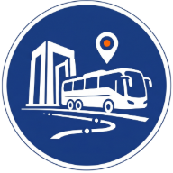

Yeni sürüm hazır
Yenile
Çanakkale Hat & Sefer
Çevrimdışı
⭐
Yerlerim
▾
⚙️
Kaydedilen Yerler
+ Ekle

Çanakkale Hat & Sefer
Çanakkale otobüslerini gerçek zamanlı takip edin, rota planlayın ve kalkmadan önce bildirim alın.
📅 Saatlere
Bak
🗺 Rota
Bul
Seferler yükleniyor…
Harita bekleniyor…
📍 Konum
🏁 Hedef
⏰
Planla
✕
Şimdi
+30 dk
+1 sa
🕐 Özel
⇄ Yön değiştir
Konum — En yakın durak
☆ Kaydet
Hedef — En yakın durak
☆ Kaydet
🛰
← Geri
Ayarlar
Görünüm
🌙 Karanlık
☀️ Aydınlık
📱 Sistem
Maksimum yürüme mesafesi:
↺
Yürünebilir mesafe sınırı. Daha uzaksa o durak için rota önerilmez.
Yürüme hızı:
↺
ETA hesaplaması için kullanılır. Varsayılan 72 m/dk (≈4.3 km/sa).
Çevrimdışı harita
Haritayı offline indir
Çanakkale bölgesindeki harita karoları cihaza indirilir. İnternet yokken bile bu alanda kaydırma/yakınlaştırma çalışır.
Veri
Kaydedilen yerleri temizle
Son hedefleri temizle
Tanıtımı tekrar göster
Hakkında
🌐 Geliştirici sitesi
💻 GitHub
✉️ İletişim — kaan@kaangultekin.net
📅
Seferler
🗺
Rota & Harita
🚏
Duraklar